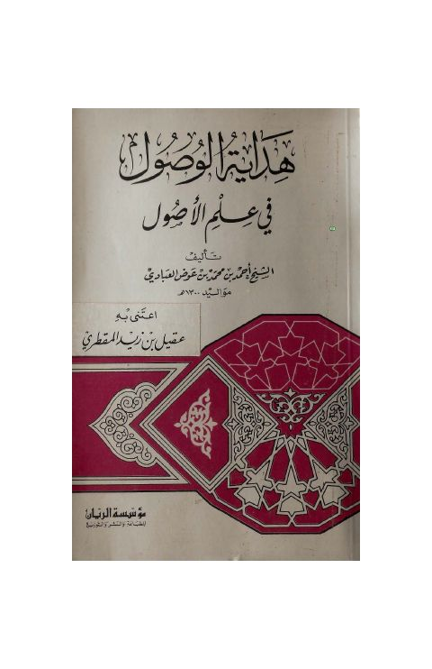

Downloads need an internet connection.
هداية الوصول في علم الأصول
Authors: أحمد بن محمد بن عوض العبادي
Editors: قيل بن زيد المقطري
Publishers: مؤسسة الريان
**▫️ العنوان: هداية الوصول في علم الأصول** ▪️ المؤلف: #أحمد_بن_محمد_بن_عوض_العبادي ▫️ المحقق: #قيل_بن_زيد_المقطري ▪️ الناشر: #مؤسسة_الريان_للطباعة_والنشر_والتوزيع ▫️ تاريخ النشر: 1413هـ 1993م ▪️ بلد النشر: بيروت، #لبنان ▫️ الطبعة: 1 ▪️ عدد الأجزاء: 1 ▫️ الصفحات: 56 ▪️ نوع الوعاء: #كتاب ▫️ التصنيف الرئيسي: #الفقه_وأصوله ▪️ التصنيف الفرعي: #أصول_الفقه ۪